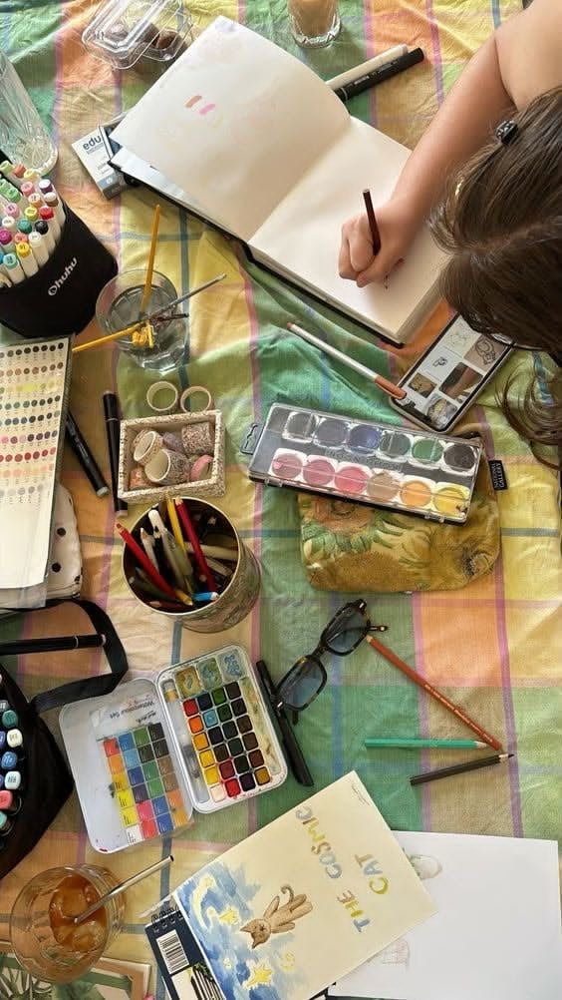

A blanket, too many paint tubes, and absolutely no plan. I'd been staring at a blank page for weeks, and the fix was just sitting outside with my watercolors until something showed up on the paper. It wasn't good. It didn't need to be — I just needed my hands busy for a while.